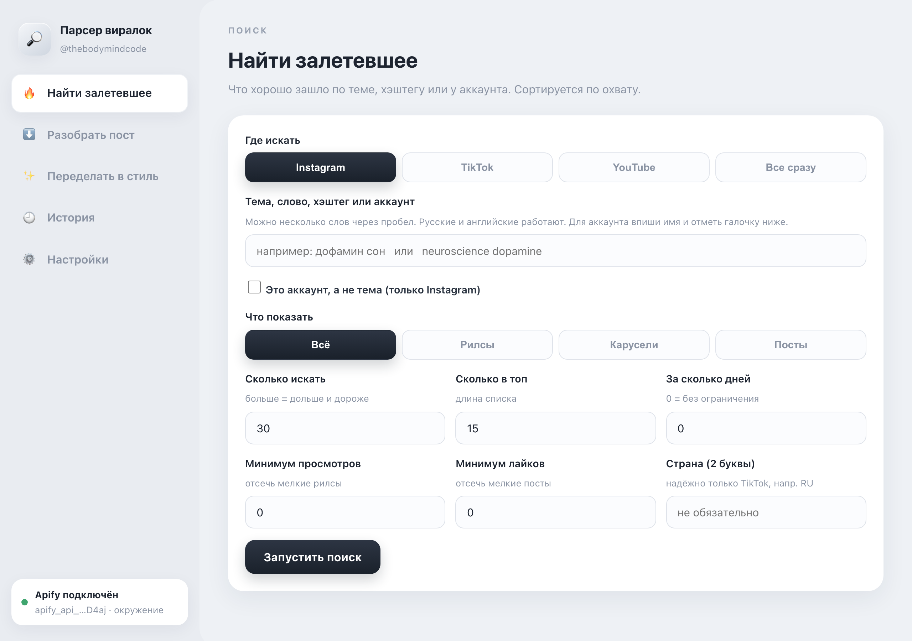
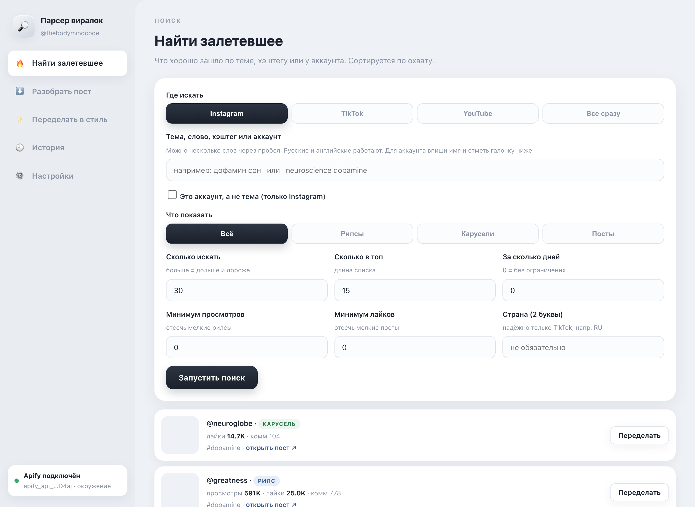
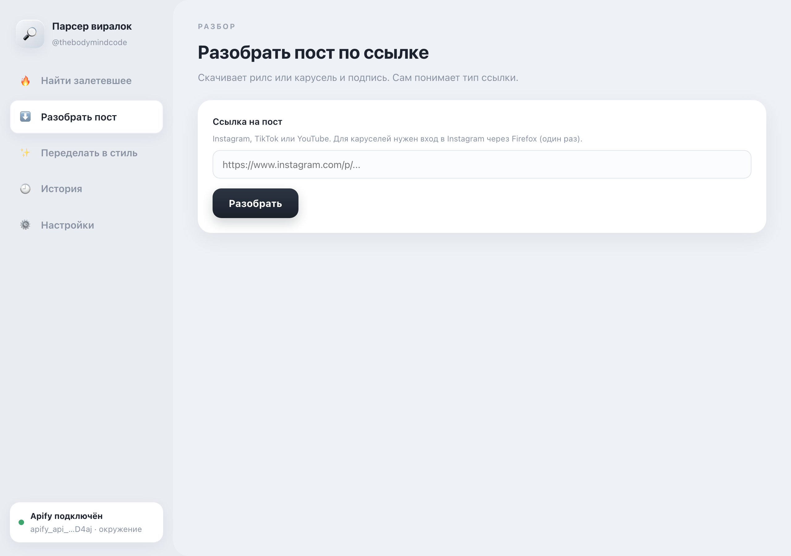
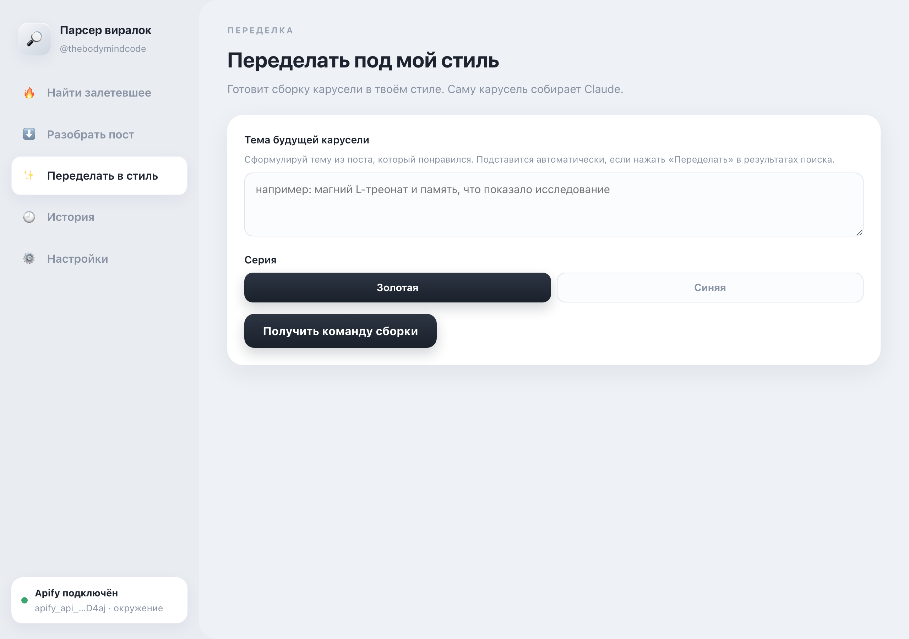
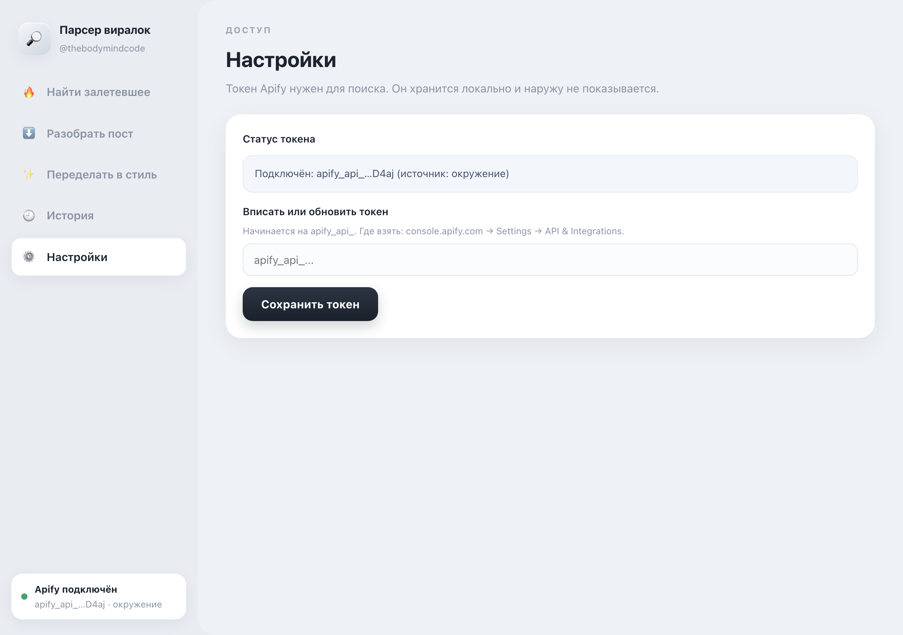

Панель это твой сайт на компьютере: открываешь в браузере и работаешь кнопками, без команд. Ищешь залетевшие рилсы и карусели, разбираешь любой пост по ссылке и готовишь переделку в свой стиль. Здесь всё по шагам.
Что получится в итоге
Ты откроешь панель в браузере и сможешь тремя кнопками: найти самые залетевшие посты по теме или у аккаунта, скачать и разобрать любой пост по ссылке, и подготовить переделку в карусель в своём стиле. Всё на русском, мышкой, без команд в Терминале.
Что нужно перед началом
Найди на Рабочем столе файл «Парсер-панель.command» и дважды кликни по нему мышкой.
Откроется маленькое чёрное окошко (это Терминал, окно для запуска, его трогать не надо) и сразу сам сайт панели в браузере. Адрес панели 127.0.0.1:8765, это твой компьютер, наружу ничего не уходит.
Вот так выглядит панель, когда открылась. Слева меню, справа рабочая область.

Это первый пункт меню, он открыт сразу. Заполни форму сверху вниз:
Нажми тёмную кнопку «Запустить поиск» внизу формы.
Появится список карточек, отсортированный по охвату (сверху самое залетевшее). В каждой карточке: превью, тип (рилс, карусель, тикток), просмотры и лайки, автор, тема, ссылка «открыть пост» и кнопка «Переделать».

Открой в меню слева пункт «Разобрать пост». Вставь в поле ссылку на рилс или карусель (Instagram, TikTok или YouTube) и нажми кнопку «Разобрать».
Панель скачает пост и покажет его: для карусели все слайды по порядку и подпись, для рилса обзор и подпись.

Есть два пути. Быстрый: в списке поиска нажми на карточке кнопку «Переделать», тема подставится сама. Или открой пункт меню «Переделать в стиль» и впиши тему руками.
Выбери серию: «Золотая» или «Синяя». Нажми «Получить команду сборки». Панель выдаст готовую строку и кнопку «Скопировать команду».

История. Открой пункт «История», чтобы увидеть прошлые поиски, разборы и переделки. Удобно вернуться к тому, что искал раньше.
Настройки. Здесь виден статус ключа доступа к поиску (токен Apify). Он уже подключён, об этом говорит надпись «Подключён» и зелёная точка. Менять ничего не нужно. Если когда-нибудь понадобится новый ключ, впиши его в поле и нажми «Сохранить токен». Ключ хранится только на твоём компьютере и наружу не показывается.

Частые ситуации и что с ними делать. Самое простое всегда: скажи мне словами, что случилось.
Дважды кликни по файлу «Парсер-панель.command» ещё раз и подожди пару секунд, сайт откроется сам. Если Mac спросит разрешение запустить файл, разреши (это твой же файл).
Открой пункт меню «Настройки» и посмотри статус. Если там не «Подключён», впиши токен в поле и нажми «Сохранить токен». Если не знаешь токен, скажи мне, я подставлю.
Это Instagram просит вход, не поломка. Открой браузер Firefox, зайди на instagram.com под рабочим аккаунтом, потом снова нажми «Разобрать». Дальше всё работает само. Если перестало через неделю, просто зайди в Instagram в Firefox ещё раз.
Попробуй другое слово, более крупную тему или по-английски (например neuroscience вместо узкого русского хэштега). Поставь фильтры минимум просмотров и лайков в ноль. Для каруселей надёжнее искать по сильному аккаунту: впиши его имя и отметь галочку «Это аккаунт».
Это и есть выключение панели, ничего страшного. Чтобы снова включить, дважды кликни по файлу «Парсер-панель.command» на Рабочем столе.
Мини-словарик